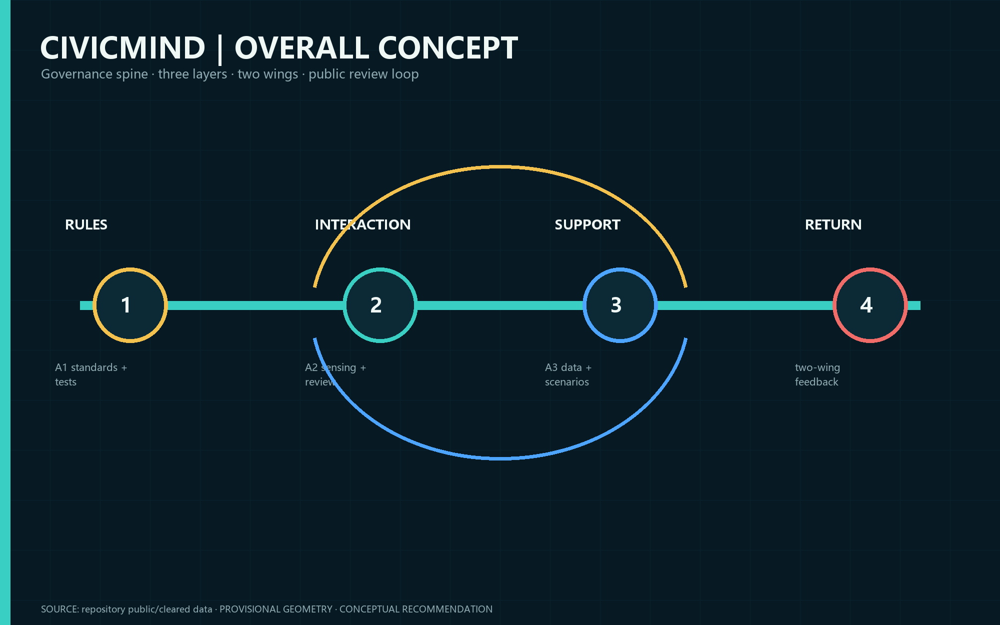
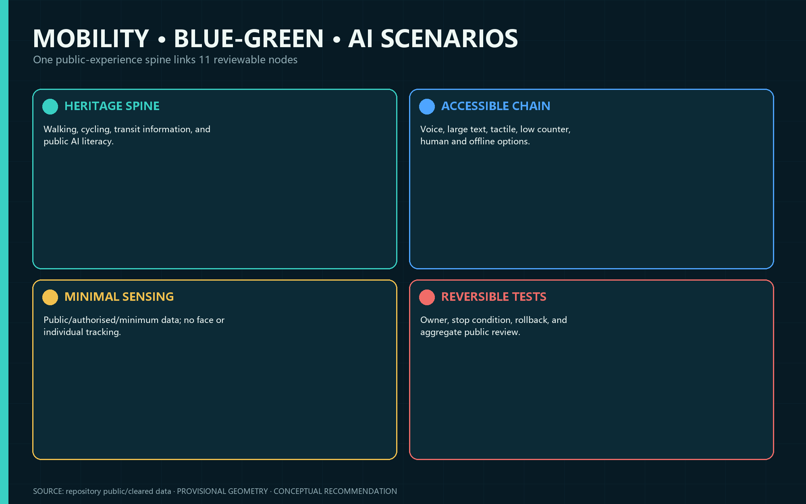
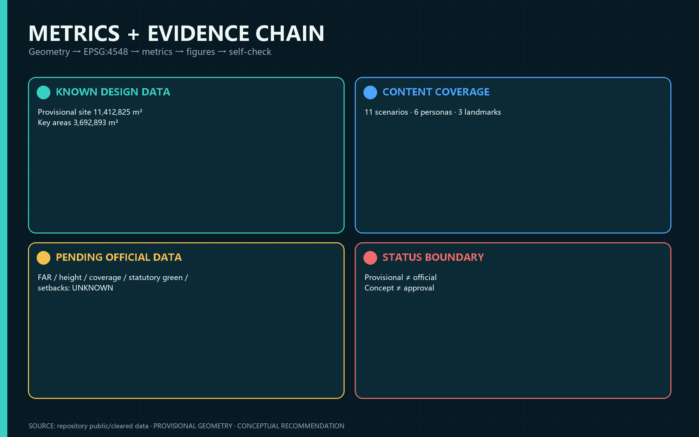

CivicMind Jing-Zhang — A Living Lab for AI Urban Governance
Governance as infrastructure: rules, responsibility, Human Review, exit, and public return.

Overview map
See structured evidence and proposal narrative.
Three-level scope
See structured evidence and proposal narrative.
Key areas
See structured evidence and proposal narrative.
Land-use structure
See structured evidence and proposal narrative.
Mobility
See structured evidence and proposal narrative.
Blue-green public space
See structured evidence and proposal narrative.
Buildings
See structured evidence and proposal narrative.
Renewal projects
See structured evidence and proposal narrative.
AI scenarios
See structured evidence and proposal narrative.
Core metrics
See structured evidence and proposal narrative.
Task coverage
See structured evidence and proposal narrative.
Self-check status
See structured evidence and proposal narrative.
Sources
See structured evidence and proposal narrative.
Assumptions
See structured evidence and proposal narrative.
Core metrics


All spatial proposals, programmes, governance mechanisms and schedules are conceptual recommendations for professional development. They are not approvals or government commitments.